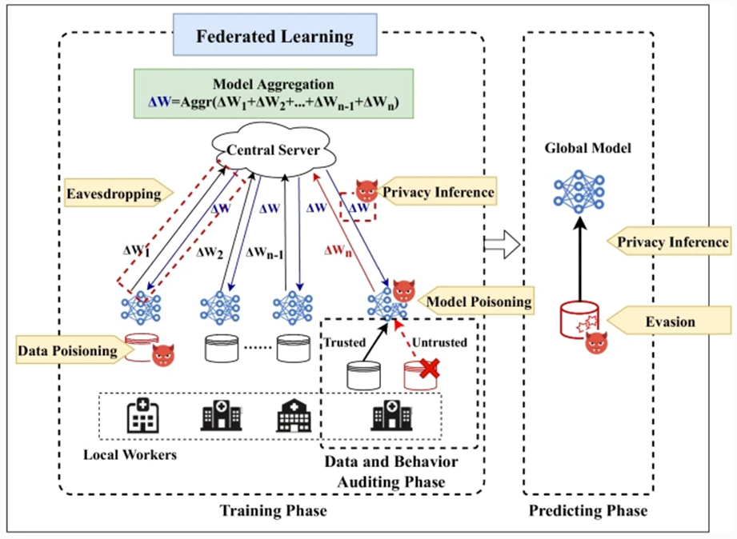
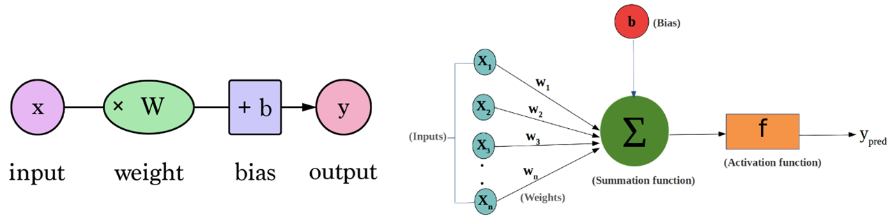
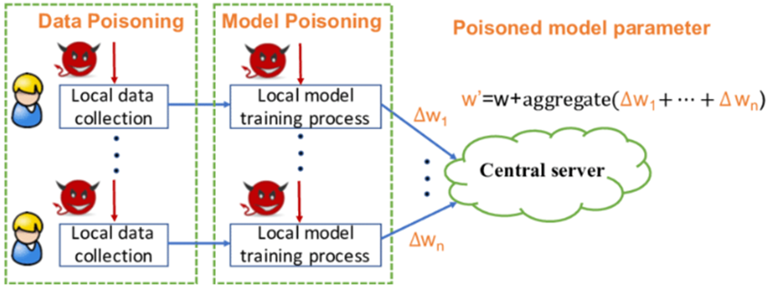
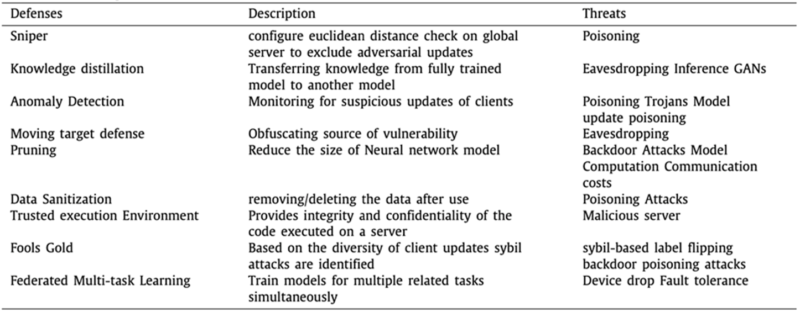

A vulnerability is a weakness in a system that allows a curious or malicious attacker to gain unauthorized access. Identifying these vulnerabilities is essential for creating a more secure environment by implementing necessary safeguards to defend against potential loopholes. Failing to protect personally identifiable information (PII) or to comply with data protection laws can result in severe legal consequences. In the Federated Learning (FL) ecosystem, vulnerability sources can be categorized into five distinct groups.

Figure 10.7: A Threat Model For Federated Learning Architecture [2]
Attack 1 - Poisoning: Poisoning occurs when tampered data weights are added to the global machine learning model. This risk is particularly high in federated learning, where various aspects of the process can be targeted. Poisoning can happen during the training phase, impacting either the training dataset or the local model, which in turn can affect the performance and accuracy of the global model. The likelihood of poisoning attacks from one or more clients’ training data is significant, as is the severity of the threat.

Figure 10.8: Poisoning Attack in federated learning
Data poisoning: In federated learning, data poisoning is defined as the generation of “dirty” samples intended to train the global model, with the aim of producing falsified model parameters that are then sent to the server. Data injection can be viewed as a subcategory of data poisoning, where a malicious client injects harmful data into the processing of the local model. Consequently, the attacker may gain control over multiple clients’ local models, ultimately manipulating the global model with the malicious data.

Figure 10.9: Data and Model Poisoning Attack in federated learning
Model poisoning: In model poisoning attacks, the malicious agent typically targets the global model directly. During this type of attack, the adversary can manipulate the updated model before it is sent to the central server for aggregation, which can easily compromise the global model. Research indicates that model poisoning attacks are generally more effective than data poisoning attacks. Moreover, the effectiveness of model poisoning tends to increase in large-scale federated learning environments with numerous clients.
Data Modification: Data tampering or modification attacks can involve changing or altering the training dataset. For example, feature collision occurs when two classes in the dataset are merged, tricking the machine learning model into consistently misclassifying the targeted class. Additionally, introducing a shade or pattern from another class to the targeted class can confuse the model. Another method involves randomly swapping labels within the training dataset.
Attack 2 - Backdoor Attacks: A backdoor attack (a Malware) injects a malicious task into an existing machine learning model while maintaining the model's accuracy for the legitimate task. Identifying backdoor attacks can be challenging and time-consuming, as the accuracy of the actual machine learning task may not be affected immediately. The severity of backdoor attacks is high because it often takes a significant amount of time to detect them. These attacks can have a considerable impact, as they can confuse machine learning models, leading them to confidently predict false positives.
Attack 3 - GANs: A Generative Adversarial Network (GAN) is a machine learning model that operates like a creative competition between two neural networks: the Generator and the Discriminator. The Generator's role is to create synthetic data—such as images, music, or text—that appears authentic, while the Discriminator's task is to distinguish between real data sourced from the training set and the artificial data generated by the Generator.
Generative Adversarial Network (GAN)-based attacks in federated learning have been extensively studied and analyzed by numerous researchers. Due to their ability to execute poisoning and inference attacks, GAN-based threats present significant risks. GANs can be utilized to extract training data through inference and then employ that information to poison the training dataset. Consequently, GAN-based threats are considered high-impact and are prioritized as critical vulnerabilities.
Attack 4 - System Disruption: System disruptions are frequently encountered when highly configured and secured applications must undergo downtime due to unplanned or scheduled activities on back-end servers. In federated learning, the severity of this threat is low because each client operates with a local-global model, allowing the training process to resume after an outage. However, despite the low severity, this remains a significant threat, as planned downtime could potentially be an attack aimed at stealing information from the FL environment.
Attack 5 - Malicious Server: In cross-device federated learning, the majority of the processing occurs at the central server. This server is responsible for selecting model parameters and deploying the global model. The presence of compromised or malicious servers can have a significant negative impact. Honest yet curious or malicious servers can readily access private client data or manipulate the global model, potentially exploiting shared computational resources to create harmful tasks within the overall machine learning model.
Attack 6 - Communication Bottlenecks: Training a machine learning model using data from multiple heterogeneous devices presents a challenge due to communication bandwidth limitations. In the federated learning approach, this issue is mitigated by transferring trained models rather than sending large amounts of raw data. The impact of communication bottlenecks in this context can be severe, as they can significantly disrupt the federated learning environment.
Attack 7 - Free-riding Attack: A Free-Riding Attack in Federated Learning (FL) occurs when a participant, or client, attempts to benefit from the global model without making meaningful contributions. Essentially, these clients gain rewards without doing any work. Some clients take on a passive role, connecting to the network solely to take advantage of the benefits offered by the global machine learning model without contributing to the training process. In some cases, these passive clients may submit dummy updates instead of training the model with their local data. This type of attack has a more significant impact in smaller FL environments, as a lack of client participation can adversely affect the training of the global model. While the likelihood of this attack is low, its potential severity is considered medium.
To explore the defence strategices please focus on the following table:
